NavAIgate Console 1.13.0
Run a model on your own Mac from the new-chat screen
So with this release you open a new chat in bb, you pick Local instead of Online, you choose a model that is already on your Mac, and the chat sends its prompts to that model in Ollama or LM Studio, and it goes through opencode by default, or through Claude Code itself if you switch that on.
On 22 November we installed the release on a clean copy of standard bb 0.49, the same bb you download, and a Local chat through opencode with a 27B Qwen model in LM Studio listed a folder, read a file, added up the numbers in it and gave the right answer in about 4 minutes on a 48 GB Apple Silicon Mac. It's honestly a good result, and it's also slow, and the Claude Code side is still experimental, so this page tells you exactly what we measured, what you need, what "runs on this Mac" really means and where it stops.
1What you get
The new-chat screen now has two choices at the top. Online is a chat exactly as you have it today, and Local is a chat on a model on your Mac, with the model picked from a list under the orb and a row that tells you whether that model is in memory, with a Load and Unload button next to it.
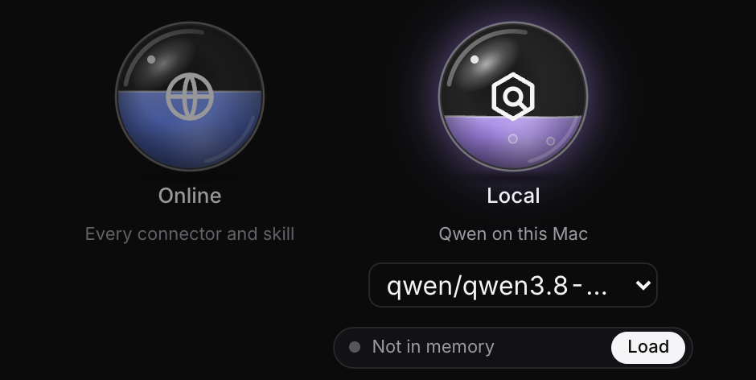
Once a Local chat is running, the line under the chat box says Local, the model and "runs on this Mac", and the Privacy section explains exactly what that line does and doesn't promise.
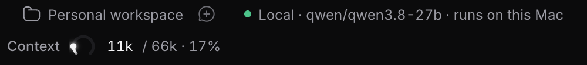
2How a Local chat runs
Everything in this picture is on the same Mac. The one difference between the two harnesses is that Claude Code doesn't know how to talk to Ollama or LM Studio by itself, so the Console adds a small route inside bb, on 127.0.0.1, which takes Claude Code's requests and passes them to your runner, and opencode talks to the runner directly.
- On the new-chat screen you pick Local and a model from the list, which leaves out a model Ollama reports as coming from its cloud, and leaves out every Ollama model when
OLLAMA_HOSTpoints Ollama at another machine. - bb starts the chat on opencode, or on Claude Code if you've switched that on in Setup and the model passes the check.
- opencode sends the conversation straight to Ollama or LM Studio on this Mac.
- Claude Code sends it to the Console's route inside bb on 127.0.0.1, and the route passes it to Ollama or LM Studio, and gives a clear error if the runner is off or the model isn't loaded.
- Ollama or LM Studio runs the model in your Mac's memory and the answer comes back the same way.
That picture is about where the model's prompts go, and it doesn't mean the chat is cut off from the internet, because the chat's tools can still reach the network, and Privacy goes through that properly.
3What you need
- bb with the NavAIgate Console 1.13.0, and the opencode harness in bb. For Local on Claude Code you also need Claude Code in bb as you have it today.
- Ollama or LM Studio running on the Mac, with a model already downloaded. The Console doesn't download models for you in this release, so you do that in Ollama or LM Studio first.
- A short skill list, if you use opencode. opencode puts your skills into the first prompt of every new chat, so count them before you start, and Your skill list and opencode shows why and how.
- For Claude Code, a model that can use tools and runs with a window of at least 65,536 tokens. The Console checks both and only offers Claude Code for a model that passes.
- Enough memory, and this is the part to be honest about, because we've only tested one size of Mac.
| Memory | opencode | Claude Code (experimental) |
|---|---|---|
| 16 GB | Not a target for this release | Not a target |
| 24 to 32 GB | Untested | Untested. LM Studio's Load button refuses below 40 GB, because it asks for the 65,536-token window |
| 48 GB | Right answer in about 4 minutes with a 27B Qwen model in LM Studio, on standard bb with no skills | Tested with a 27B Qwen model on Ollama and on LM Studio, on our own bb build, and on LM Studio on standard bb, about 18 GB in memory in LM Studio |
| 64 GB and up | Untested | Untested |
4How to switch it on
- Get a model onto your Mac. Install Ollama or LM Studio and download a model there. We used Qwen3.8 27B in LM Studio for the screenshots on this page.
- Install or update the Console. Use the command in Where to get it, then reload bb.
- Count your skills. Run
ls ~/.claude/skills ~/.agents/skills | wc -lin a terminal, and if the number is high, read Your skill list and opencode before your first Local chat, because that number decides how long the first reply takes. - Tick the boxes in Setup. Open the Console's Setup screen and tick Online or Local on the new-chat screen, because a fresh install on the Simple preset leaves it unticked and the orbs only show once it's ticked. If you want Claude Code as the harness, tick Local chats on the Claude Code harness (experimental) too, and it stays off until you tick it.
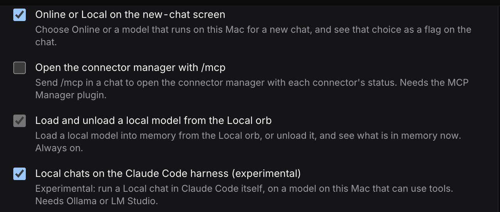
- Open a new chat and pick Local. Then choose your model from the list under the orb, like the first screenshot on this page.
- Press Load. The light goes green and the row shows how much memory the model takes. For LM Studio, Load asks for a 65,536-token window, and on a Mac with less than 40 GB it refuses and tells you to load the model in LM Studio with a smaller window and use opencode. For Ollama, a model needs its window set to 65,536 (Ollama calls it
num_ctx) to be offered on Claude Code. - Pick the harness. If you ticked Claude Code and the model passes the check, a switch appears with Claude Code and opencode, and on Claude Code the line under it tells you which mode the chat starts in.
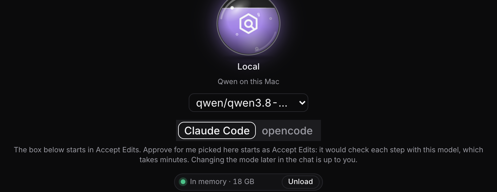
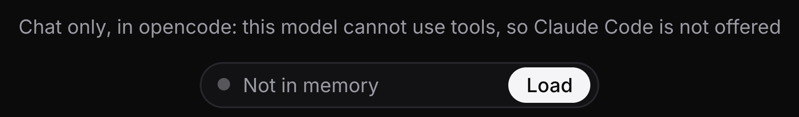
- Type and send. The first reply takes a few minutes on either harness, and on Claude Code on a busy Mac it took about 12 minutes, so leave it, and follow-ups are much quicker while the model stays in memory.
- Press Unload when you're done. That gives the memory back to the rest of your Mac.
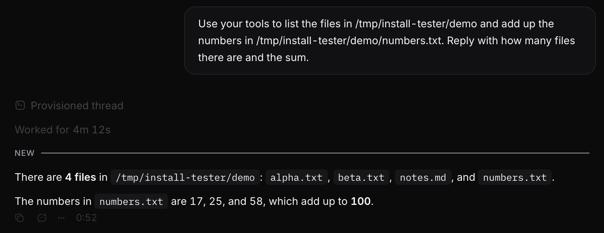
5opencode or Claude Code
We kept both, because they do different jobs, and the honest way to put it is that opencode is the default, it takes any model on the list and it's the one we've now timed on standard bb, and Claude Code is still experimental, and we've tested it mostly on our own bb build and once on standard bb.
| opencode | Claude Code, experimental | |
|---|---|---|
| Switched on | Yes, it's the default | Off until you tick it in Setup |
| Which models | Any model the list shows from Ollama or LM Studio, including ones that can't use tools | Only models that can use tools and run with a 65,536-token window |
| How it reaches the model | Straight to Ollama or LM Studio | Through the Console's route inside bb, on 127.0.0.1 |
| First prompt | About 11,000 tokens with no skills, plus your skill list, up to 200 skills | 31,000 to 35,000 tokens in our own bb build |
| What we've proved | On standard bb 0.49: listed a folder, read a file and gave the right answer in about 4 minutes | On our own bb build: reading and listing files on Ollama and LM Studio, and writing files in Accept Edits and Full Access. On standard bb 0.49: listed a folder, read a file and gave the right answer after about 12 minutes on a busy Mac |
| Starts in | bb's usual mode for opencode | Accept Edits, unless you choose Full Access |
| Model box in bb | Shows the local model's name | Still shows a cloud model name, see Privacy |
So Claude Code isn't the smaller or the faster one, because its own start-up text is bigger than opencode's with no skills, and the reason to pick it is that it's the Claude Code you already know, with its tools and bb's permission picker.
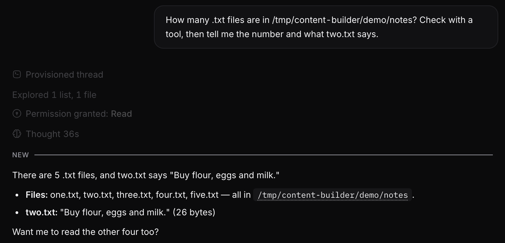
6Your skill list and opencode
This is the one thing I'd check before anything else, because opencode takes every skill it finds in ~/.claude/skills and ~/.agents/skills, up to 200, and puts them into the first prompt of every new chat, so a Local chat through opencode gets slower with every skill you have installed.
Here's what we measured on one 48 GB Apple Silicon Mac on 21 and 22 November, with a 27B Qwen model in LM Studio and a 65,536-token window:
| Setup | First prompt | Result |
|---|---|---|
| Standard bb 0.49, no skills | About 11,000 tokens for the whole first turn | First output after 196 seconds, right answer after about 4 minutes, with two file reads |
| 200 skills on a larger setup, with the Mac busy with other work | About 48,700 tokens | Three test chats gave no answer in 12 minutes |
| Plain opencode in a terminal, no skills | 6,077 tokens | Right answer in 161 seconds, follow-up in 41 seconds |
With that window, opencode starts to shorten a chat by itself at 49,536 tokens, and bb shows nothing while it does it, so with 200 skills you can be sitting there with no sign anything is happening.
What the Console tells you
From about 90 skills, the Local orb shows a note for opencode with your count and an estimated size, which is about 11,000 tokens plus about 155 per skill, and from about 190 skills it also tells you the 200-skill result above. Below about 90 skills it shows nothing. We only measured 0 and 200 skills, so everything in between is an estimate, and it isn't a measurement of your Mac.
What you can do today
- Count them.
ls ~/.claude/skills ~/.agents/skills | wc -lgives you a rough number, because it counts every entry in both folders. - Move the ones you don't use out of
~/.claude/skillsand~/.agents/skills, and bear in mind your other Claude Code and agent chats stop seeing them too.
The Console doesn't trim the skill list for a Local chat yet. That's the next piece of work, a small setup for Local chats on opencode that's sized to the model, and until then the list is yours to manage.
7Speed
These are the numbers from one 48 GB Apple Silicon Mac with a 27B Qwen model, and we haven't measured other machines, so read each row with the harness and the bb it was measured on.
| What you do | Time to the reply |
|---|---|
| opencode on standard bb, no skills, first reply | First output after 196 seconds, right answer after about 4 minutes |
| opencode with 200 skills, first reply | No answer in 12 minutes, in three test chats |
| Claude Code harness, our own bb build, first reply | About 2.5 to 4 minutes |
| Claude Code harness, standard bb 0.49, Mac busy with other work, first reply | About 12 minutes |
| Claude Code harness, follow-up in the same sitting | 9 to 32 seconds |
| Claude Code harness, follow-up after the chat's session had closed | As long as a first reply |
The first reply is slow because a model on your Mac has to read the whole first prompt once before it writes a word, and that's the harness's own start-up text, its instructions and its list of tools, plus your skills on opencode. After that the model keeps it, so a follow-up only reads the new part, and that's why the second message comes back in seconds. If the chat's session has closed, a follow-up took as long as a first reply in our tests. On standard bb, Claude Code's first prompt was about 25,400 tokens, and when the Mac is busy the model can need more than 5 minutes to read it, and a request with no reply after 5 minutes is sent again, which is why our standard bb test took about 12 minutes to its first reply, and any Mac that needs more than 5 minutes to read that prompt can see the same long first reply, and we haven't fixed it yet.
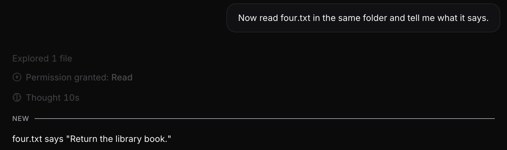
8Permission settings, in plain words
This is about the mode a Local chat starts in, and once it's running, switching modes in the chat is up to you.
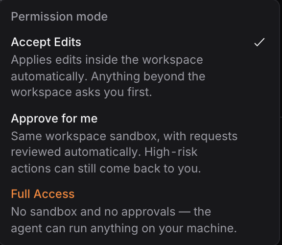
- A Local chat on Claude Code starts in Accept Edits, so it asks before it changes anything outside its own folder. In our test a write outside the folder needed exactly one Allow once click.
- It starts in Full Access only if you choose that, either in bb's picker in the new-chat box or as
localPermissionModein your profile. In our test a write and read-back in Full Access finished in 159 seconds with no waiting. - At the start, Approve for me isn't used for a local model. It checks every step with that same model, one minute at a time, and one small file write took 16 minutes. If you pick it in the box, the chat starts in Accept Edits, or in Full Access when that's your profile's choice.
- Local chats in opencode, and Online chats, start in their usual mode. On our clean copy of standard bb that was Full Access for opencode, so check the picker before you send.
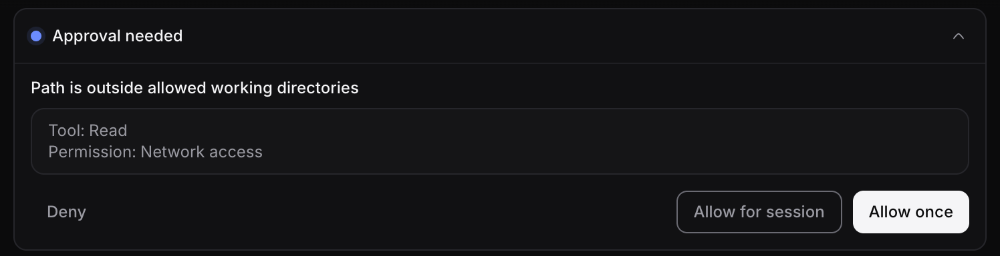
9Privacy, straight
Everything in this section is true of the release code, and it was proved on our own bb build and checked by reading standard bb's code. On standard bb 0.49 we also ran the fork rule, the block when Claude Code is switched off and the clear error with the model unloaded, on an earlier build of this release, and they held, and the rest wasn't run there.
What "runs on this Mac" means
"Runs on this Mac" describes the model, and only the model. A Local chat sends its prompts to a model in Ollama or LM Studio on this Mac, not to a Claude or Codex account, and it doesn't mean the chat is cut off from the internet, because the chat's tools, a project's own connectors, web fetches and bb's own tools, which can message other chats, can still reach the network.
The label under the box only shows where the Console holds the chat to that model. On Claude Code, the launcher locks the model. In opencode, the Console checks the chat's current model, so if you switch an opencode chat to another model inside the chat, the label says it started Local and names the model it runs on now, or the model picked for its next reply. No other harness ever shows the label.
The Console leaves out a model Ollama reports as coming from its cloud, by its own remote fields or a :cloud or -cloud tag, and it leaves out every Ollama model when OLLAMA_HOST points Ollama at another machine. That check hasn't been tried against a real cloud model, and an opencode provider or runner pointed at another machine is outside it.
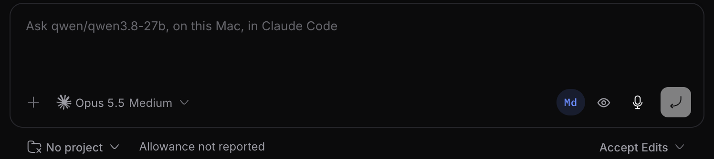
The four cases where a chat marked Local can still reach a cloud account on its own
A Local chat in opencode isn't itself sent to a Claude or Codex account by the Console, but a chat it starts can be, in cases 1, 3 and 4 below. For a Local chat on Claude Code, and for a Claude Code chat that any Local chat starts, there are exactly four cases:
- The plugin isn't loaded, or bb drops the plugin's settings after bb's 5-second limit, when the chat starts or restarts.
- The chat's first start is on a machine other than the bb server's Mac, and its Local mark can't be read.
- A chat it started doesn't get held to the local model, in one of these ways:
- it begins while the plugin can't read that chat's own mark;
- it begins while the plugin can't read what started it and doesn't yet know any Local chat on this Mac;
- it's more than four steps down from the Local chat;
- it runs on another harness, such as Codex.
- Another plugin sets which
claudeprogram a chat runs before the Console does.
Your own choices that take a Local chat's content elsewhere
bb keeps every chat's messages in its own history, Local chats included, and a Local chat's content goes to another model or person if you do any of these:
- hand the chat over, or continue it in a new chat, on an online model;
- mention it with @ in an online chat;
- share messages from it through a guest review link;
- ask another chat to read it from bb's history;
- in opencode, switch the chat itself to an online model.
The Console refuses three things for a Local chat or a chat made from one, because each would carry the conversation away:
- moving it to another machine;
- starting new work on another Mac from it, when "Include conversation context" is on;
- giving its messages to a model started alongside it, or to a continuation.
Forks, and chats a Local chat starts
A fork of a Local chat on Claude Code, or a chat any Local chat starts on Claude Code, up to four steps down, is treated as the Local chat. With Local chats on Claude Code switched on, it runs on the same local model, whatever model was picked for it, and with Local chats on Claude Code switched off, or on another machine, it doesn't start, and bb shows an error saying a fork, or a chat started by a Local chat, stays on this Mac.
A fork of a Local chat in opencode is different, because bb keeps the fork in opencode on the same model, and the fork carries no Local label.
For a Local chat on Claude Code, a fork the plugin misses can't find the Local chat's history, so it fails instead of starting. Once the plugin knows any Local chat on this Mac, there's one more stop: a Claude Code chat whose origin can't be read is stopped for that one start, with a message to send again, and an ordinary chat then starts on the next try.
A chat on another harness that a Local chat started, a Codex agent for example, runs on its own model, and it's never labelled Local.
Where Local transcripts are kept
A Local chat on Claude Code keeps its transcript on this Mac, in ~/.claude-local/config/projects. That's apart from your main Claude Code history in ~/.claude/projects, so tools that read the main history don't see Local chats, and like every chat, its messages are also kept in bb's own history on this Mac.
What we measured
- If the runner is off, the chat stops. With Ollama stopped, a Local chat on Claude Code said "Ollama is not running on this Mac. Start Ollama, then send again." and with the model unloaded it gave the error below, and in both cases nothing fell back to a cloud model.
- Where Claude Code's own traffic went. During our Claude Code test turns on our own bb build, which only read and wrote files, we sampled the Claude Code process and everything it started about 1,800 times, and it only talked to 127.0.0.1. A connection shorter than half a second could have been missed, and this says nothing about what a chat's tools would reach if you asked them to.
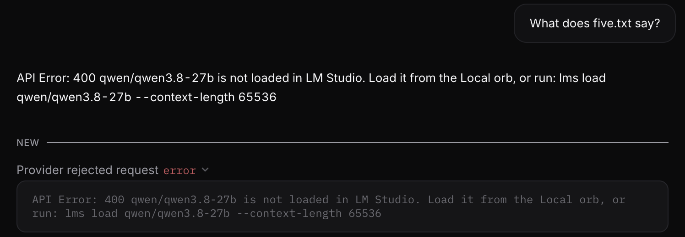
10Known limits
- What we've run on standard bb. On a separate, clean copy of standard bb 0.49, the public installer put the Console in, the same installer, run again against a local copy of this release, updated it in place, a Local chat through opencode gave the right answer, and with the Claude Code box unticked the Local orb showed no Claude Code switch.
- The Claude Code harness on standard bb. On the same clean copy of standard bb 0.49, a Local chat on Claude Code gave the right answer, but the first reply took about 12 minutes with the Mac busy with other work, because its first prompt, about 25,400 tokens, needed more than 5 minutes to read and a request with no reply after 5 minutes is sent again, and follow-ups in the same sitting took 9 to 32 seconds, and any Mac that needs more than 5 minutes to read that prompt can see the same long first reply, and we haven't fixed it yet.
- The Claude Code harness is experimental, and apart from that test, the fork rule, the block when it's switched off and the error with the model unloaded, which ran on an earlier build of this release and weren't run again on the final one, everything we proved on it ran on our own bb build.
- Your skill list slows opencode down, and the Console doesn't trim it yet, see Your skill list and opencode.
- One Mac tested. A 48 GB Apple Silicon Mac. 24 to 32 GB is untested, 16 GB isn't a target, and nothing was run on Windows or Linux.
- Online wasn't tested on the clean copy. That copy wasn't signed in to a Claude account, so an Online chat there wasn't tried.
- Updating from 1.12 was tested. On a second clean copy we finished Setup on 1.12.5, made a chat, and updated to the final build from a local copy of this release: everything updated in place, Setup kept your choices, and the new-chat screen showed the Online and Local orbs with Online chosen.
- Old local chats aren't marked. A chat you made on a local model before 1.13 has no Local mark after the update, so the sidebar counts it as Online.
- Saving Setup after the update changes the preset name from "simple" to "custom", and nothing you ticked before changes.
- The skill-list note was checked on standard bb too, in that second run on the final build, at 120, 200 and 260 skills. At 200 skills it gives two sizes, the estimate of about 42,000 tokens and the about 48,000 we measured on a larger setup.
- Passing the check isn't a promise. The check shows the model is given the tools and has the window, and that doesn't prove every model that passes will use the tools well.
- One large model at a time. A 27B model takes about 18 GB in LM Studio, so load one and unload it when you're done.
- Downloads are on you. The Console doesn't download or set up models in this release.
- The version number doesn't move. After the update the Console plugin still reports 0.35.0 in bb's plugin list, because bb updates plugins by commit, so the number isn't how you tell you're on 1.13.0.
- bb resends a failed turn. If a Local turn fails because Ollama was off, bb's retry can resend it by itself once Ollama is back, and in our test that resend ran on the local model.
- The Cache Clock card shows up on Local chats with cloud cache prices and a Keep warm button, and none of that applies to a Local chat, so don't press Keep warm on one.
- The tour has no step for Local yet. The guided tour doesn't point at the Local orb in this release.
- The four cloud cases and the cloud model name in bb's box are described under Privacy.
11Where to get it
The Console is free to use for yourself and your own business, and it lives at github.com/skyremote/navaigate-console. You need bb 0.48 or later, open and signed in, and then you run one command in a terminal, and if you already have the Console the same command updates it:
curl -fsSL https://raw.githubusercontent.com/skyremote/navaigate-console/main/install.sh | bashIt's a good habit to read a script before you run it, and the README in the repository shows how to see every step first with --dry-run. Then reload bb, count your skills, tick Online or Local on the new-chat screen in Setup, open a new chat and pick Local, and if you want Claude Code as the harness, tick it in Setup first.
If you try it on a Mac with a different amount of memory, tell us in the community how much memory you've got, how many skills and how long the first reply took, because that's exactly the number we don't have yet.